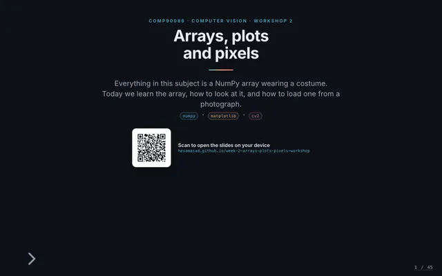
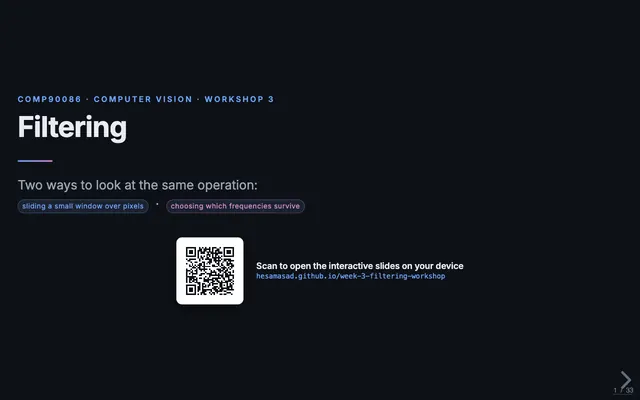
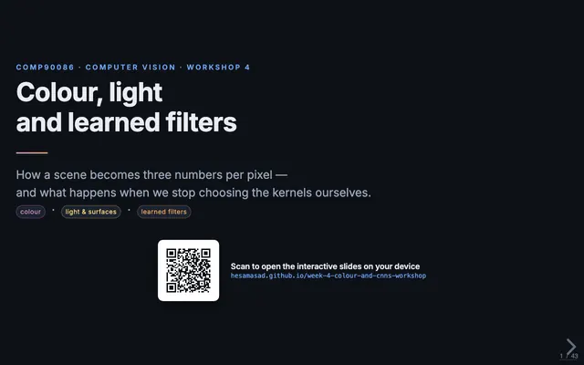
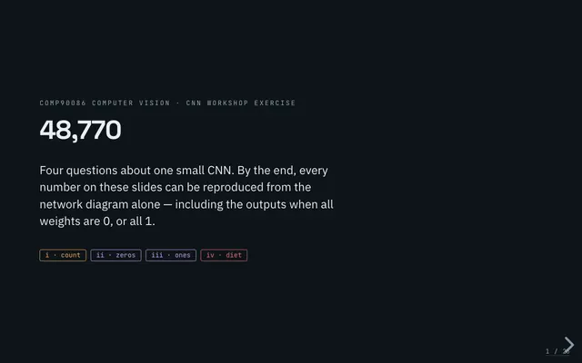
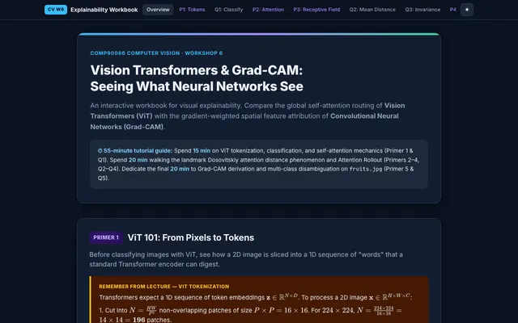
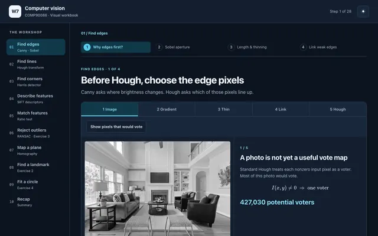
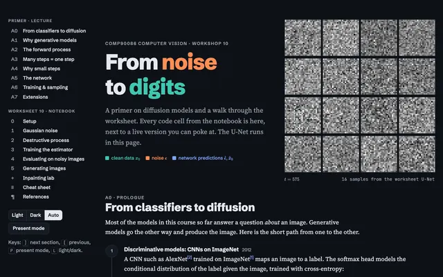
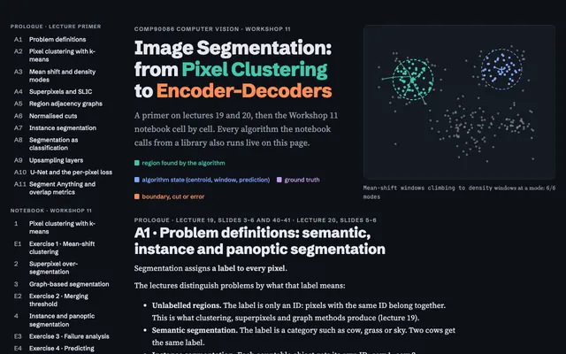

COMP90086 Computer Vision
The University of Melbourne, 2026 · Workshop tutor

Arrays, plots and pixels
NumPy, Matplotlib and OpenCV: how an image is just an array, and how to look at it.

Filtering in space and frequency
Convolution with small windows, and the same filters seen as frequency masks.

Colour, light and learned filters
Colour spaces and image formation, with a CNN running live in the browser.

Counting a CNN
Parameter and output-size counting for convolution, pooling and dense layers.

Vision Transformers and Grad-CAM
Patches to tokens, self-attention, attention distance, and Grad-CAM explanations.

Features, Hough and RANSAC
Edges step by step, Hough voting for lines, and robust fitting with RANSAC.

Diffusion models
From noise to digits: a diffusion primer with the worksheet U-Net running in the browser.

Image segmentation
From pixel clustering to encoder–decoders, with a live walkthrough of the notebook.